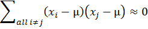

收录于合集
文献来源： Lin, T. (2017). 统计学中算变异量为什么要除以n-1？什么是「自由度」？[EB/OL].http://blog.udn.com/nilnimest/92412101
作者简介： 林泽民（LIN, Tse-min），美国明尼苏达大学政治学博士，现任美国德克萨斯大学奥斯汀分校（University of Texas at Austin）政府系副教授，专长政治学方法论、形式理论、美国与比较政治行为研究，在 American Political Science Review, American Journal of Political Science, Journal of Democracy, Journal of Politics, Political Analysis, World Politics 等国际顶级期刊上发表论文多篇。
样本变异量是基本统计学一个很难懂也很难教的概念。初学统计学的学生一开始就遇到这个概念，如果没学懂，很可能就对统计学丧失了信心或兴趣。这个概念难懂之处并不只在于它的意义或用处，更在于它的公式：
这个公式的分子是所谓「差方和」(sum of squared deviations) , 还不算太难懂。真正难懂的地方是分母：如果要求 「平均差方」(mean squared deviations)，应该把差方和除以n，为什么要除以n-1？
一般老师对这个问题通常会回答说因为分子使用了样本平均数，失去了一个「自由度」(degrees of freedom)，所以除以n-1。有的老师还会进一步说如果计算差方和使用的不是样本平均数而是母体平均数，则除以n即可。至于为何使用样本平均数会失去一个「自由度」，有点耐心的老师会解释：样本平均数是原来n个数算出来的，有了样本平均数，原来n个数就被「限制」住了，只有n-1个是「自由」的。学生听到这里常常满头雾水。他们会想：原来n个数不是已经知道了吗，说他们是「自由」究竟是什么意思？而且就算「自由度」的概念懂了，又为什么要把差方和除以自由度，除以n得到平均差方不是更直接了当吗？
如果学生那样反问，没有耐心的老师可能会干脆说：当n很大的时候，其实除以n和除以n-1是差不多的，照着公式做就对了。学过数理统计学又超有耐心的老师则会说：这与统计推论有关，当我们用样本变异量来估计母体变异量时，为了避免估计上的偏差，必须要除以n-1。刚开始学基本统计学的学生听了当然毫无头绪，此时老师可能会说：你们以后去修数理统计学就会明白了，这个除以n-1而不是除以n的方法唤作 「贝索校正」 (Bessel’s correction)。学生听到这里，大概也只好知难而退等以后再说了。不过诲人不倦的老师还会进一步说：其实这要看你用哪一种估计方法，如果你用「最大概似估计法」（MLE），除以n才是对的；有人选择「最小均方误差估计法」（MMSE）还除以n+1呢。说到这里，学生恐怕已经决定退选了。
我教基本统计学教了20几年，常被学生追问这个问题，逼得自己也只好认真想出一些可以让学生稍感满意的答案。本文尝试在不用高深数学的原则下来回答这个问题。
变异量的概念
首先，我们假设有一组n个数目的数据：x1, x2, …, xn，它们的样本平均数是x̅。
变异量所要测量的是这一组数据彼此间差异的程度，它告诉我们数据的同构型或一致性。我们可以先想象这组数据全部相同的情况：数据彼此之间完全没有差异，也就是同构型高到不能再高了，一致性也大到不能再大了，此时变异量为0。如果数据彼此间差异极大，也就是同构型或一致性极低，此时变异量极大。
想象一个大联盟球队的球员，我们有这些球员上个球季打击率的数据。如果这些数据的变异量极小，这代表球员们打击能力大致相同，同构型极高；反之，如果变异量极大，则能力参差不齐，同构型低。再想象我们特别关注其中一位球员，我们有他参加大联盟以来每个球季的打击率。如果这些数据的变异量极小，这代表这球员每年打击表现的一致性极高；反之，如果变异量极大，则一致性低。
然则为何变异量要用上面的公式计算？要算数据彼此间差异的程度，不是算出数目两两之间差异的总和或其平均值就好了吗？这样说虽然不无道理，但实际上大有问题。
设想我们把数据中所有数目依其大小标在一直在线，一共有n个点，则这些点两两之间一共会有C(n,2)=n!/(n-2)!2!个距离，例如n=3会有3个距离，n=4会有6个距离，n=5会有10个距离，等等。但这些距离并不是相互独立的，因为除了相邻两点之间的距离外，其它的距离都可以算出来。举例来说，若n=3而三点为x1<x2<x3，则共有|x1-x2|、| x2-x3|、|x1- x3|三个距离，但|x1-x2|+| x2-x3|=|x1- x3|，也就是3个距离中只有2个是独立的，第三个可以由这两个独立的距离算出来。推而广之，直线上n个点x1<x2<…<xn，虽然可有C(n,2)个距离，只有|x1-x2|、| x2-x3|、|x3- x4|、…、|xn-1- xn|这n-1个相邻两点之间的距离是独立的；这n-1个距离知道之后，其它的距离也就知道了。这n-1个相邻两点的「独立」距离，包含了样本变异量所有的信息，因此我们不妨暂且把n-1唤作「自由度」。换句话说，「自由度」就是样本变异量所含独立信息的数目。
如果我们把总变异量定义为数据中这些独立信息的总和，则当我们把总变异量除以自由度n-1，我们就得到这些独立信息的平均变异量了。但这样的定义有一个问题，我们看下式就明白了：
这就等于我们小学时学过的植树问题：「一条路有90公尺，沿路每边种了10棵树，两端都种，请问每边树与树间的平均距离多少？」这样来算变异量，除了用到数据最大数和最小数之间的「范围」(range) 外，完全忽略了中间n-2个相对点位置所含的信息，因此它不是一个适当的方法。
此外，因为两数相减可能得到负数，但距离必须是正的，所以我们常用绝对值来算距离。但绝对值函数y=|x|在x=0的地方有个尖锐转折，不是一个平滑函数，数学上不好处理。比较好的消去负号的方法是平方：负负得正。
因此统计学不用数据点两两之间距离绝对值的和来算总变异量，而是用每个数据点与平均数距离平方的总和，也就是前面所说的「差方和」。差方和的好处是它用到了数据中每一点的位置，但它同时也必须用到样本平均数。用了样本平均数之后，数据中的n个点与平均数的距离就有一个限制了：
因此它们只包含了n-1个独立的信息。我们把n-1唤作「自由度」，也就是独立信息的数目。把差方和除以「自由度」就得到变异量； 它可以诠释为每个独立信息对数据所含总信息——差方和——的平均贡献。 变异量因为用了距离的平方，必须开根号才能回到原来的距离单位。于是我们把变异量开根号，得到的结果，就是所谓「标准偏差」（standard deviation）：
为什么要「贝索校正」？
如果这样讲学生还是不懂为何要除以n-1，那就只好祭出「贝索校正」的法宝了。以下尝试用比较浅易的方法说明贝索校正，但我们必须先加强对数据的假设。
我们现在假设有一组n个从母体随机抽样得来的资料：x1, x2, …, xn。虽然任何一组数据都可以计算其变异量，这里我们假设数据是随机样本是有原因的。如果数据不是随机样本，它背后没有一个母体，以下的讨论便没有意义。我们假设母体的平均数是μ，而样本的平均数是x̅。
贝索校正的原理是：用以上定义的样本变异量来估计母体变异量时，平均来说不会有偏差。如果我们用「≈」代表「平均来说等于」，我们可以用下式来表示这个陈述：
这个式子的左边是样本变异量，右边是母体变异量。母体变异量的定义是相对于母体平均数的平均差方。理论上，母体的平均差方要用期望值来算，但为了避免使用高深数学，这里直接用样本数据对母体平均数的平均差方来算。因为在计算时除了数据各点以外没有用到可以用数据算出来的数目，它的「自由度」是n而不是n-1。上式告诉我们：「平均来说」，样本变异量「等于」母体变异量。所谓「平均来说等于」，意指从同一个母体中重复随机抽出许多同样大小的样本，虽然每一个样本的变异量不会一样，当我们重复抽了很多很多样本时，这些样本变异量的平均数会恰恰等于母体变异量，不会有所偏差。这就是统计估计中所冀求的「无偏差性」(unbiasedness)。这好比打靶。也许你射击了很多很多次都没有命中红心，但假如红心刚好在你射击点群集的中心位置，我们就可以说你的射击技巧具有「无偏差性」。
统计估计的「无偏差性」需要证明。为了证明方便起见，我们先定义
TSS是以母体平均数为中心的总差方和，将它除以n就得到母体变异量。RSS是以样本平均数为中心的总差方和，将它除以n-1就得到样本变异量。ESS是假设数据中每个数目都被样本平均数取代时的母体总差方和。
以下我们分四个步骤，先对每一个步骤做实质讨论后，再证明贝索校正的无偏差性。
(1)是一个恒等式，它并不是「平均来说」才成立的；它告诉我们：TSS可以分解为两个部分：ESS与RSS。这个关系可以进一步阐释如下：如果我们不知道样本每一个数的数值而只知道样本平均数，则我们在计算母体总差方和时，只好用平均数来取代每一个数。这样算出来的母体总差方和就是ESS；它只占真正TSS的一部分。这一部分我们可以把它想成是样本平均数所能「解释」（Explain）的部分，也就是平均数这个信息所能传达的母体总信息的部分，此所以我们以ESS来代表它。那么剩下的部分呢？(1)告诉我们：母体总信息不能被样本平均数所解释的部分，恰恰等于样本总差方和。因为这个原因，我们把样本总差方和也称作「剩余总差方和」(Residual Sum of Squares）而用RSS来代表。
(2)不是一个恒等式，它告诉我们：「平均来说」，ESS只占了TSS的1/n；除非n很小，否则样本平均数只能解释母体总信息的一个很小的部分。
(3)可从(1)与(2)用简单的代数算出：既然TSS=ESS+RSS，而ESS「平均来说」只占TSS的1/n，那么RSS「平均来说」就占TSS的(n-1)/n了。
我们再把(3)的两边除以n-1就得到(4)：样本总差方和除以n-1「平均来说」等于母体总差方和除以n。 这正是「贝索校正」：除以n-1的样本变异量「平均来说」，等于除以n的母体变异量！
现在我们可以了解「自由度」的真正意义了：我们把母体总差方和分成n等份，则样本平均数「平均来说」所能「解释」的只有一份，而这一份之外，样本平均数不能「解释」的n-1份刚好就是样本总差方和，这n-1就是所谓的「自由度」。换句话说：我们知道了样本平均数之后，样本n个数据点只能「解释」母体总差方和n等份中的n-1份。这是为什么我们在计算样本变异量的时候要把样本总差方和除以n-1。而这样算的最终目的，就是为了要让样本变异量「平均来说」等于母体变异量。
数学证明
这里只有(1)与(2)需要证明：
【(1)的证明】
【(2)的证明】
这个证明里有两个关键步骤。第一，我们应用了多项式平方展开的公式
这让我们导出
第二，我们用了x1, x2, …, xn是随机样本的假设而得到

的结果。随机样本的假设是指数据的每一个数都是从同一个母体抽出而独立分布的（identically and independently distributed）。在这个假设之下，xi与xj是独立的，因此它们的共变量为0。在重复抽样的情况下，xi有时候大于µ，有时候小于µ；xj也是；而且xi跟µ的偏差与xj跟µ的偏差是互相独立的。因此(xi-µ)(xj-µ)的值有时候为正，有时候为负；虽然大小不一，但「平均来说」，他们加起来会互相取消。此所以我们知道在理论上Σall i≠j(xi-µ)(xj-µ)≈0。
以上证明参考了
R.A. Fisher, 1912. “On an Absolute Criterion for Fitting Frequency Curves.” Messenger of Mathematics 41, pp. 155-160. Republished in Statistical Science, Vol. 12, No. 1 (Feb., 1997), pp. 39-41.
但原文条理并没有交代得很清楚，这里主要是我自己的诠释。
感谢林泽民教授授权本号转载！

 “广告点一点，也是支持学术公益
“广告点一点，也是支持学术公益 ”
”